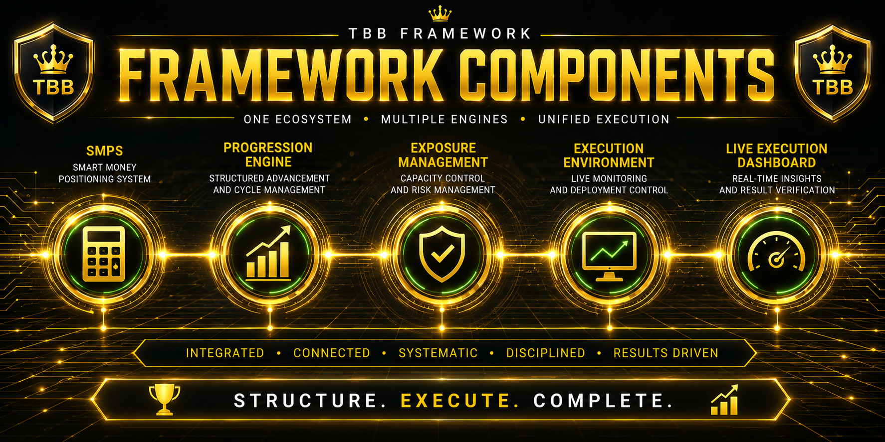

The TBB Framework operates through multiple specialized engines working together inside one unified execution environment. Each component performs a specific operational function while contributing to the complete execution cycle.
The operational calculation engine of the framework responsible for capital allocation, profitability projections, exposure tracking, and execution boundary management.
The Progression Engine manages execution continuity across deployment cycles. It controls progression levels, stage advancement, capital scaling, and recovery procedures throughout the execution journey.
The Exposure Management Structure maintains operational boundaries throughout active execution cycles. It controls deployment limits, capacity utilization, and exposure management to ensure disciplined execution.
The Execution Environment is the live operational layer of the TBB Framework. It is where deployment structures are activated, monitored, managed, and verified throughout the execution cycle.